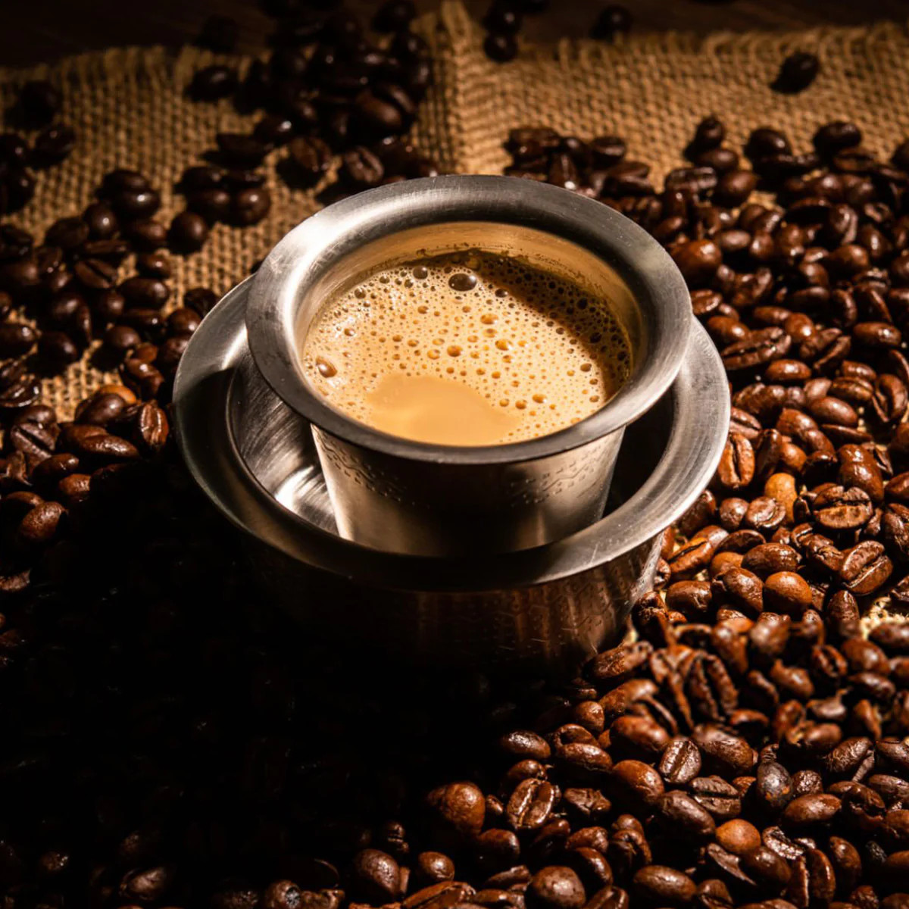

Filter Coffee

Description:
Filter coffee is a hot drink made with ground coffee powder which is passed through a filter to make the coffee decoction. It’s them mixed with milk and sugar (optional) and served. It’s popular in South India and is also referred to as “filter kaapi”
Ingredients:
- Ground Coffee
- Milk
- Sugar
- Water
Steps:
- To the coffee filter add, 2 tablespoons of coffee in the upper compartment (one with perforations).
- Spread the coffee with a spoon or your hands and then press the coffee with the disc.
- Add boiling water and fill until it’s almost filled to the top.
- Cover with the lid and let the coffee percolate into the lower lower vessel for 20 to 30 minutes. This time may be more if your filter is bigger.
- After 20 minutes or so open the lid, all the water would have percolated in the lower chamber by now and what you have is a strong coffee decoction.
- To make one single serving of coffee- add 1/4 to 1/2 cup of hot coffee decoction to your cup again this depends on how strong coffee you prefer.
- Stir in sugar to taste, or skip sugar if you don’t want like sugar in your coffee.
- Add in hot milk, this could be 1/3 to 1/2 cup depending on how much milk you like.
- Now, to make it frothy and dissolve the sugar, pour the coffee from one tumbler to another.
- Pour from a height so that you get nice froth. Repeat this couple of times until it’s frothy.